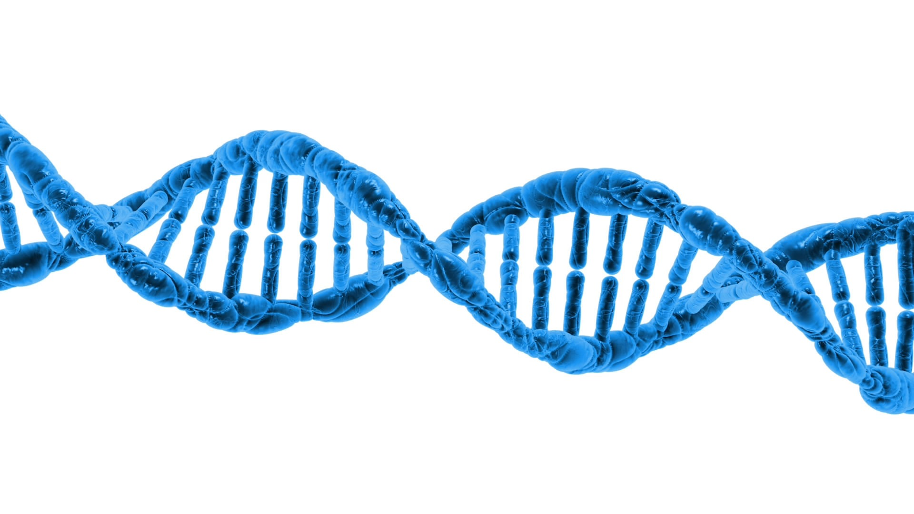

The rapid boost in next generation sequencing technologies has increased the sizes of databases. In fact, with these new technologies, scientist are opened to new possibilities and definitely new challenges. What used to be a problem of lack of data, has now become a problem of how to store these data and how to extract the information burried deep within. Thanks to organisms like Arabidopsis thaliana and a group of others known as model organisms, plant biologist have had more insights as to how the genetic material of plants drive everything we see from germination to anthesis and to fruits.
 If we take a step back to look at the DNA, it is amazing how all of the diversity seen in the world is encoded by four nucleotides efficiently repeated by nature to varrying lengths. A computer programmer may be tempted to say the genetic code is the easiest code to write, but it remains the most difficult code to decrypt. From the discovery of transposable elements by Barbara McClintock to the invention of the CRISPR gene editing technologies, much efforts have been directed towards linking genetic diversity to the genetic code. In this project deep convolutional networks are used to discover the patterns within the genetic code. We attempt to predict the relative expression of genes from their promoter sequences.
Bluntly put, gene expression is the conversion of information from the DNA to phenotypes. The information in the DNA is sent to RNA in a process called transcription. The information is then forwarded to proteins in a process called translation. Again this pathway is an over summarized form of genetic information transfer and a gene is considered expressed as long as it undergoes transcription. This does not by no means imply that all genes that are transcribed get to the stage of proteins or produce external phenotypic traits. Some of the RNA produced can act as molecules on their own, others are precursors for further downstream information transfer and others get degraded. After using the word phenotypes, one may be wondering what phenotypes are then. Well genes and their variants make up the primary phenotypes, everything between a gene and the external physical trait will make up the intermediate phenotypes an the physical traits themselves are the terminal phenotypes.
Artificial neural networks are an inspiration from the brain's architecture albeit some
deviation from their biological cousins. They are at the core of deep learning, from
powering google to things like youtube and even Apple's famous Siri. The most important
similarity between artificial neural nertworks and the brain is the hierarchy in which
information is transfered. If we look at the brain on the left constructed
by only its neurons, we quickly realise interconnection between several neurons. The
hierarchy within such a net may not be seen from this image but there exist such a
hierarchical structuring in our brains.
The Hubel and Wiesel model presents the visual cortex structure as follows:
LGB (lateral geniculate body)→simple cells→complex
cells→lower order hypercomplex cells→higher order hypercomplex cells. It is in fact from
this model that Fukushima gained his inspiration of the neocognitron which is the
pioneer inspiration of modern day convolutional neural networks.
The one thing humans however
have which artificial neural networks lack is perception. When you look at the picture of
a cute puppy you can not choose not to see the puppy or its cuteness. Neither can you explain
how you recognized a cute puppy; it's just obvious.
Our attention in this project was focused on one specific artificial neural network, the
deep convolutional neural network. These networks are used primarily for image classification
because they can identify features within images. Once a feature has been identified, it's position
in future images is irrelevant. Another beauty of these architectures is that they are not fully
connected. This means each neuron is only connected to a set of neurons within a small area of the
previous layer called it's receptive field.
If we look at the brain on the left constructed
by only its neurons, we quickly realise interconnection between several neurons. The
hierarchy within such a net may not be seen from this image but there exist such a
hierarchical structuring in our brains.
The Hubel and Wiesel model presents the visual cortex structure as follows:
LGB (lateral geniculate body)→simple cells→complex
cells→lower order hypercomplex cells→higher order hypercomplex cells. It is in fact from
this model that Fukushima gained his inspiration of the neocognitron which is the
pioneer inspiration of modern day convolutional neural networks.
The one thing humans however
have which artificial neural networks lack is perception. When you look at the picture of
a cute puppy you can not choose not to see the puppy or its cuteness. Neither can you explain
how you recognized a cute puppy; it's just obvious.
Our attention in this project was focused on one specific artificial neural network, the
deep convolutional neural network. These networks are used primarily for image classification
because they can identify features within images. Once a feature has been identified, it's position
in future images is irrelevant. Another beauty of these architectures is that they are not fully
connected. This means each neuron is only connected to a set of neurons within a small area of the
previous layer called it's receptive field.
Convolutional layers
Convolutional layers are the main building blocks of the
convolutional neural network. They serve as feature extractors and can learn the features
representations of their inputs. Each neuron in a convolution layer is connected to
the neurons in it's receptive field on the previous layer. Their outputs are the feature
maps.
Pooling layers
Pooling layers reduce the spatial resolution of the feature
maps produced by the convolutional layers. They help us mitigate the curse of dimensionality.
Pooling layers can be maxpooling or average pooling. As their names suggest, the take the max
value in their pooling field (just like a receptive field found in convolutional layers) or the
average.
Dense layers
Fully connected layers are simply layers in which each neuron
is connected to every every neuron in the previous layer. It is not strange to see some
machine learning experts stack fully connected layers at the end of their convolutional
neural networks. Keras and tensorflow have give these layers the cooler name, Dense layers.
Dropout layers
One of the problems faced by deep learning networks is the so called overfitting. A situation in
which the network performs well on the training set but poorly on the validation set. To mitigate
this problem, scientist created the dropout layers. Like the name, these layers switch off some neurons
during training.
Batch normalization
Another problem that may arise as a result of the activation function used is the problem of a
vanishing gradient. When the gradient vanishes, it affects how backpropagation updates the weights.
To mitigate this, Sergey Ioffe and Christian Szegedy proposed batch normalization.
If convolutional neural networks are used for image classifications, how then do we make use of their strengths in sequences classification? Sequences, like images also have features. The features found within DNA sequences are called motifs. You may have heard of the popular TATA-box motif but that is just one out of the numerous pool of motifs that have been discovered within sequences. The AGRIS database provides us with the sequences of motifs of varrying lengths found in Arabidopsis, from 6 nucleotides to 16 nucleotides long. However, we can not feed sequences of letters into a network that does mathematical computation. So we need to represent these sequences in numerical form and that is where the popular one hot encoding method steps in. One hot encoded sequences will be large matrices with a lot of zeros and very few ones representing the neuclotides. The advantage of this method is that it preserves the neighborhood within the data space. We began with artificial experiments in which we mutated real sequences and decided their classes based on the mutations. Then we moved into the real world scenario in which we have no control over, where nature alone decides the rules of engagement.
Project Target
The aim of this project was to predict the probability of a gene being expressed or remaining unexpressed using only
its promoter sequence. We do a full sweep using all the genes from Arabidopsis thaliana. The assignment of class
labels depended on the situation in the case of the artificial simulation and on the RNA seq normalized counts in the case
of the real world data.
The 1001 genomes project for Arabidopsis thaliana was launched in 2008, with the goal to discover detailed whole-genome variation in atleast 1001 strains. It finally ended up providing detailed analysis of 1135 genomes. The second generation sequencing technologies used produce short reads from their which were aligned to a reference genome to identify variants. To train neural networks, one requires a massive amount of data. So we reconstructed 728 from the 1135 genomes using the Genome analysis toolkit. This tool helps us reconstruct a pseudogenome from a reference genome and a variant call format file. Combining some python scripting and bedtools, we were able to extract promoter sequences for every gene in Arabidopsis. The RNA seq normalized counts were provided by the scientist who analysed the chosen 728 genomes. Remember we mentioned above that class asignment for the real simulation was done using the normalized counts; genes with 0 normalized counts were considered relatively unexpressed otherwise relatively expressed. Again we use "relatively expressed" because we can not calculate the absolute expression of a gene, since things like RNA degradation can occur before we perform RNA seq analysis.
Hint
Not all publications or projects will provide you with analyzed read counts. So how do
you get this yourself ? Don't bother because the bioinformatics community has got you more
than covered. The easiest way to perform RNA seq analysis with no interaction with the
command line is to use the Galaxy server.
Galaxy provides you with a user interface to create workflows by linking processing tools
together. A typical workflow can begin with an accession list; Galaxy will automatically download
the fastq files from the SRA database; files will be
trimmed with trimmomatic; files are checked for quality using the FastQC tool; files are aligned to
a reference genome using hisat which produces normailzed counts in transcripts per million. If you have
fewer fastq files, found on your localhost and you are confident with interacting with the command line,
then there is another way to do your analysis; files can be trimmed with trimmomatic, quality controlled
with FastQC and finally aligned with kallisto.